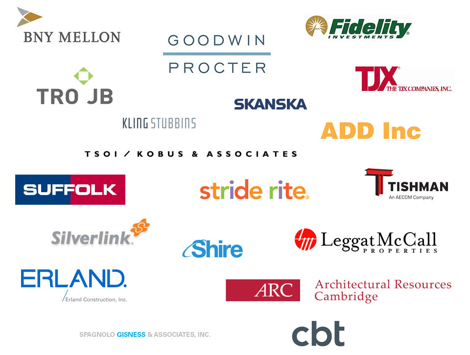

Theresa Whiting is a seasoned executive coach with over 30 years business experience, 17 years consulting, 10 years at IBM, and 5 years at Mellon Bank.
Known for her business acumen and effective communication style, Theresa has a solid track record of supporting managers with evaluating performance, conducting tough conversations, dealing with conflict and motivating teams through communication efficiencies. The majority of her clients are highly competent professionals ranging from mid-level managers up to C-suite executives.
Her understanding of the dynamics and trends in architect, real estate, construction and engineering, financial services, manufacturing, and pharmaceutical, make her uniquely qualified as a developer and facilitator of communication programs as well as one-on-one leadership consulting to a number of Fortune 500 clients.
Her career started at IBM, which led to her success in managing customer support and branch operations throughout the Northeast. Later, she joined The Boston Company, a leading nationwide investment firm, where she established and grew an extensive new training department. Theresa Whiting designed, managed and implemented highly successful training programs for over 1,000 employees and revamped the company's orientation program.
When Mellon Bank acquired The Boston Company in 1993, she was a key player in facilitating the merger. As Vice President and Director of Training & Development, she instituted a transitional plan and curriculum for integrating the two, very large organizations. This included successfully managing teams of associates in Pittsburgh and Boston, with responsibility for all ongoing training. Theresa Whiting holds a B.S. in Business Management from Boston University. She is a qualified administrator of the Myers-Briggs Type Indicator instrument and a long standing member of The International Coaching Federation of New England.
